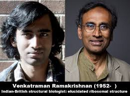

.jpg)

वेंकटरमन राधाकृष्णन (जन्म 18 मई 1929) एक अंतरराष्ट्रीय स्तर पर प्रसिद्ध अंतरिक्ष वैज्ञानिक और रॉयल स्वीडिश अकादमी ऑफ साइंसेस के सदस्य हैं। वे भारत के बंगलौर में स्थित रमन रिसर्च इंस्टिट्यूट में अवकाशप्राप्त प्रोफेसर रह चुके हैं जहां वे 1972 से 1994 तक निदेशक रहे थे।
प्रोफेसर राधाकृष्णन क़ा जन्म मद्रास के एक उपनगर, टोंडारीपेट में हुआ था। उनकी प्रारंभिक स्कूली शिक्षा मद्रास में हुई थी। उन्होंने श्रीमती फ्रांसिस-डोमिनिक राधाकृष्णन से विवाह की थी।
प्रोफेसर राधाकृष्णन ने विभिन्न समितियों में विभिन्न क्षमताओं में सेवा प्रदान की है। 1988-1994 के दौरान वे अंतरराष्ट्रीय खगोलीय संघ (इंटरनेशनल एस्ट्रोनोमिकल यूनियन) के उपाध्यक्ष रहे थे। उन्होंने इंटरनेशनल यूनियन ऑफ रेडियो साइंसेस के कमीशन जे (रेडियो एस्ट्रोनोमी) के अध्यक्ष (1981-1984) के रूप में काम किया है।
राधाकृष्णन आज दुनिया के सबसे सम्मानित रेडियो खगोलविदों में से एक हैं, इस मामले में वे दुनिया की सबसे बड़ी रेडियो दूरबीनों के साथ विभिन्न क्षमताओं में जुड़े रहे हैं। वे नीदरलैंड फाउंडेशन फॉर रेडियो एस्ट्रोनोमी की विदेशी सलाहकार समिति, ऑस्ट्रेलिया टेलीस्कोप नेशनल फैसिलिटी, सीएसआईआरओ, ऑस्ट्रेलिया, ग्रीन बैंक रेडियो टेलीस्कोप की सलाहकार समिति, नेशनल रेडियो एस्ट्रोनोमी ऑब्जरवेटरी, अमेरिका के सदस्य रहे हैं। वे गवर्निंग काउन्सिल ऑफ डा फिजिकल रिसर्च लेबोरेटरी, अहमदाबाद और इंटर-यूनिवर्सिटी सेंटर फॉर एस्ट्रोनोमी एंड एस्ट्रोफिजिक्स की साइंटिफिक एडवाइजरी कमिटी के सदस्य भी रहे हैं। 1973-1981 की अवधि के दौरान वे इंडियन नेशनल कमिटी फॉर एस्ट्रोनोमी के एक सदस्य रहे थे।
राधाकृष्णन को विभिन्न वैज्ञानिक संस्थाओं, राष्ट्रीय और अंतरराष्ट्रीय दोनों के लिए चुना गया है। वह रॉयल स्वीडिश एकेडमी ऑफ साइंसेस और यू.एस. नेशनल साइंस एकेडमी दोनों के एक विदेशी फैलो रहे हैं। वह रॉयल एस्ट्रॉनॉमिकल सोसायटी के एक एसोसिएट और इंडियन एकेडमी ऑफ साइंसेज, बंगलौर में शिक्षावृतिभोगी रह चुके हैं
वे एक अंतरराष्ट्रीय स्तर पर प्रशंसित खगोल भौतिकविद हैं और अत्यंत हल्के विमान तथा सेलबोट के अपने डिजाइन एवं निर्माण के लिए भी प्रसिद्ध हैं। प्रोफेसर वी. राधाकृष्णन ने अपनी बीएससी (प्रतिष्ठा) की डिग्री मैसूर विश्वविद्यालय से प्राप्त की है। उन्होंने अपना शोध का करियर इंडियन इंस्टिट्यूट ऑफ साइंस बंगलोर के भौतिकी विभाग में शुरू किया और उसके बाद विभिन्न विश्व प्रसिद्ध संस्थानों के अनुसंधान संकायों में शामिल रहे हैं। उन्होंने 1955-58 के दौरान चाल्मर्स यूनिवर्सिटी ऑफ टेक्नोलोजी, गोथेनबर्ग, स्वीडन में एक अनुसंधान सहायक के रूप में काम किया था।
कॉमनवेल्थ साइंटिफिक एंड इंडस्ट्रियल रिसर्च ऑर्गेनाइजेशन, सिडनी, ऑस्ट्रेलिया के रेडियो फिजिक्स डिविजन में शुरुआत में एक सीनियर रिसर्च साइंटिस्ट और बाद में प्रिंसिपल रिसर्च साइंटिस्ट के रूप में जुड़ने से पहले वे कैलिफोर्निया इंस्टिट्यूट ऑफ टेक्नोलोजी, यूएसए के एक सीनियर रिसर्च फेलो रहे थे। वे 1972 में भारत लौटे और रमन रिसर्च इंस्टीट्यूट के निदेशक के रूप में इसके पुनर्निर्माण का जिम्मा अपने हाथों में लिया। रमन अनुसंधान संस्थान के निदेशक के रूप में अपने कार्यकाल के दौरान 1972-1994 के बीच उन्होंने पल्सर खगोल विज्ञान, लिक्विड क्रिस्टल के क्षेत्रों और खगोल विज्ञान में अग्रिम पंक्ति के अनुसंधान के अन्य क्षेत्रों में काम करने के लिए एक अंतरराष्ट्रीय ख्याति अर्जित की. एम्स्टर्डम विश्वविद्यालय ने 1996 में प्रोफेसर राधाकृष्णन को सबसे प्रतिष्ठित डॉक्टर ओनोरिस कॉसा डिग्री से सम्मानित किया है।
वी. राधाकृष्णन रेडियो खगोल विज्ञान के क्षेत्र के साथ 1950 के दशक में द्वितीय विश्व युद्ध के इसके असाधारण विकास की शुरुआत के समय से व्यावहारिक रूप से जुड़े रहे हैं। वे उन लोगों में से एक थे जिन्होंने भारत में प्रेक्षण संबंधी खगोल विज्ञान की स्थापना की थी। उनका करियर सही मायने में अंतरराष्ट्रीय रहा है, 1954 में स्वीडन में शुरू कर और कैलटेक (CalTech) तथा सीएसआईआरओ (CSIRO), सिडनी से होकर आगे बढ़ते हुए वे बंगलोर तक आये जहां उन्होंने अपने अंतिम तैंतीस साल बिताए.
रिसीवर के इलेक्ट्रॉनिक्स के साथ प्रारंभ कर वे तकनीकी रूप से नवीनतम और रेडियो तरंगों के ध्रुवीकरण के खगोल विज्ञान संबंधी दूरगामी अध्ययन की ओर चले गए। इसमें बृहस्पति के आसपास वान एलेन जैसे बेल्टों से रेडियो तरंगों का पता लगाना और बृहस्पति के कोर की सही रोटेशन का पहला निर्धारण शामिल हैं। वे ध्रुवीकृत चमक के लिए इंटरफेरोमेट्री के क्रमागत अनुप्रयोग, चमक के वितरण और एक हाइड्रोजन परमाणु द्वारा उत्सर्जित 21सेमी लाइन में जीमन इफेक्ट के एक प्रारंभिक अध्ययन करने वालों में भी प्रथम थे। वेला पल्सर के ध्रुवीकरण की उनकी माप एक चुम्बकीय घूर्णन वाले न्यूट्रॉन तारे का चित्र स्थापित करने में निर्णायक सिद्ध हुई थी और इसने उन्हें न्यूट्रॉन तारों की ध्रुवीय टोपी से वक्रता विकिरण के प्रतिमान का प्रस्ताव देने में मदद की जो उस समय से पल्सर उत्सर्जन प्रणाली के विषय पर हावी रहा है।
ऑस्ट्रेलिया में उनके प्रवास की अवधि ने भी तटस्थ हाइड्रोजन द्वारा 21सेमी लाइन विकिरण के अवशोषण और उत्सर्जन के एक व्यापक सर्वेक्षण में उनके नेतृत्व को चिह्नित किया जिससे बाद में इंटरस्टेलर माध्यम के यथार्थवादी मॉडल को विकसित करने में मदद मिली. उन्होंने एक बड़ी संख्या में आकाशगंगा संबंधी (गैलेक्टिक) और एक्स्ट्रागैलेक्टिक स्रोतों की ओर 21सेमी अवशोषण का क्रमागत इंटरफेरोमेट्रिक अध्ययन भी किया है। पल्सरों (पुच्छल तारा) के विभिन्न पहलुओं पर उनका विस्तृत प्रेक्षणात्मक और सैद्धांतिक कार्य वास्तव में पल्सर खगोल विज्ञान के क्षेत्र में अग्रणी है।
विभिन्न अंतरराष्ट्रीय संस्थाओं में उनके सहयोगियों के अनुसार, सभी युग खगोल विज्ञान और खगोल भौतिकी के क्षेत्र में उनके योगदान के लिए जाने जाते हैं, हालांकि प्रो॰ राधाकृष्णन को अनेकों महत्वपूर्ण खोजों का श्रेय दिया जाता है, खगोल विज्ञान पर उनके मुख्य प्रभाव ने अन्य लोगों के शोध को खगोलीय एवं तकनीकी समस्याओं की चर्चा और लोगों के व्यावहारिक सहयोग के जरिये प्रभावित किया है। वे सबसे अधिक समर्पित और बोधगम्य भौतिकविदों में से एक हैं जो किसी भी अवधारणा की गहराई तक जाकर ही संतुष्ट होते हैं और घटना की अनभिज्ञता या महत्त्व के साथ उनकी दिलचस्पी बढ़ती जाती है। वे दूसरे लोगों के कार्यों को नीरस ढंग से दोहराए जाने में कोई दिलचस्पी नहीं लेते हैं और नयी सफलताओं की खोज में लगे रहते हैं।
केवल खगोल विज्ञान का क्षेत्र ही नहीं बल्कि हैंग-ग्लाइडरों, माइक्रो-लाइट विमानों और सेलबोट का डिजाइन तैयार करने और उनके निर्माण में भी प्रो॰ राधाकृष्णन अपना प्रभाव रखते हैं। इन क्षेत्रों में उनके मूल योगदान को एरोनॉटिक्स अनुसंधान विकास बोर्ड, रक्षा मंत्रालय (हैंग-ग्लाइडर्स का डिजाइन तैयार करने के लिए) और इसरो (सेलबोट्स के लिए) के समर्थन के माध्यम से भारत सरकार द्वारा स्वीकार किया गया है।
रमन रिसर्च इंस्टीट्यूट ऑफिशियल वेबसाइट
"एम. पी. बिरला मेमोरियल एवार्ड 2005: प्रोफेसर वेंकटरमन राधाकृष्णन"